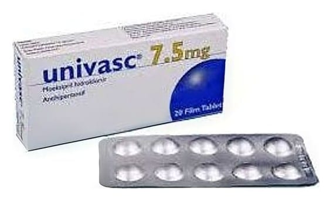

Univasc 7,5 mg Film Tablet, 20 Adet

Ne için kullanılır
KT · Bölüm 1 UNİVASC anjiyotensin dönüştürücü enzim (ADE) inhibitörü olarak bilinen bir ilaç grubuna dahildir. UNİVASC yuvarlak, bir yüzü çentikli film tablettir. Bir kutuda 20 film tablet blister içerisinde bulunacak şekilde ambalajlanmıştır. UNİVASC yetişkinlerde yüksek tansiyon (esansiyel hipertansiyon) tedavisinde kullanılır. Başlangıç tedavisinde tek başına veya yüksek tansiyon tedavisinde kullanılan diğer ilaçlar ile birlikte kullanılır.